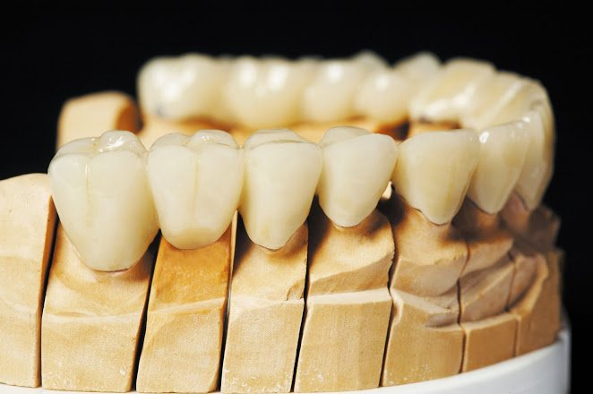

Implante Dentário na Barra da Tijuca
Infelizmente, perder um dente ainda pode acontecer — seja por traumas, cáries avançadas ou doenças periodontais. Mas ficar sem o dente não precisa ser uma realidade. Na MD Frossard, oferecemos implantes dentários na Barra da Tijuca com tecnologia de ponta, segurança e resultados altamente estéticos.

Transformando Vidas Através do Sorriso
Vivenciamos essa transformação em nossa rotina clínica diariamente. Recebemos pacientes que passaram anos usando uma prótese removível, enfrentando dificuldades na mastigação e receio de sorrir. Imagine o impacto de concluir um tratamento com uma prótese fixa sobre implantes: isso proporciona mastigação correta e segura, e permite sorrir sem medo.
Imagine também um paciente jovem com dentes bonitos e perfeitos, que sofreu um trauma e perdeu o dente central num acidente. O impacto na autoestima é incalculável. Felizmente, o implante dentário pode e deve substituir o dente ausente por outro que possua estética idêntica.
Por que escolher Implante Dentário na Barra da Tijuca?
Na nossa unidade da Barra da Tijuca (Shopping Città América, Av. das Américas, 700, Bloco 2, Sala 143), oferecemos o implante dentário como substituto permanente da raiz do dente perdido. Esse implante servirá de base para a construção de um novo dente que se harmonize em cor e formato com os demais dentes naturais do paciente.
O implante dentário é feito de uma liga de titânio, tornando-o altamente biocompatível com o nosso organismo e evitando rejeições. É importante ressaltar que, sem uma higienização adequada, existe o risco de perder o implante dentário — portanto, os cuidados preventivos são fundamentais.
Biocompatibilidade e Segurança
Utilizamos implantes de liga de titânio, materiais altamente biocompatíveis que garantem a osseointegração e evitam rejeições. A cirurgia é realizada com critério e explicamos detalhadamente o procedimento e o pós-operatório.
Como é realizado o procedimento?
A cirurgia de implante é planejada com critério e os pacientes recebem uma explicação detalhada de como será o procedimento e o pós-operatório. A instalação do implante é realizada sob anestesia local e apresenta altas taxas de sucesso.
Como se trata de um procedimento cirúrgico, podem ocorrer algum desconforto, dor e inchaço nos primeiros dias após a cirurgia. Tudo isso será acompanhado de perto pela nossa equipe. Você pode realizar seu implante dentário com total segurança na Barra da Tijuca.
Precisa de um Implante Dentário na Barra da Tijuca?
Você pode realizar sua cirurgia de implantes em nossas clínicas, tanto no Bairro de Botafogo como na Barra da Tijuca. Para tirar suas dúvidas e marcar uma consulta de avaliação, ligue para (21) 3513-8479 ou envie uma mensagem via WhatsApp. Precisamos examinar seu caso para indicar o melhor tratamento para você.